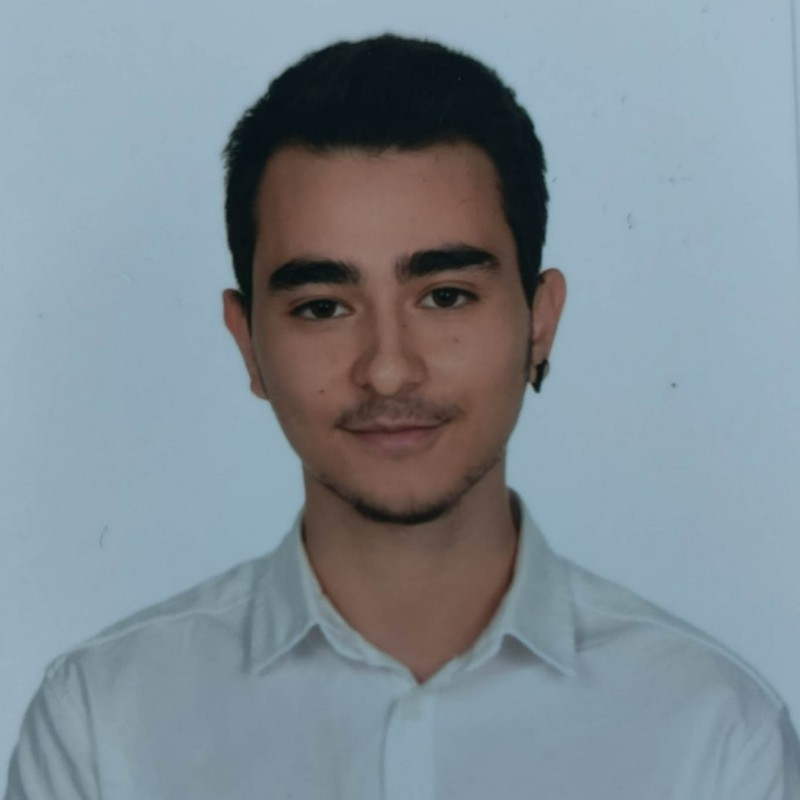

Mustafa Alimli

Hi My name is Mustafa! Im 21 Years old And Im living in Turkiye.
To basically introduce myself,From the early years of my life am always feel passionate about computers and softwares, so thats why i am choose this path and decided to be a computer engineer.
Im currently studying Computer Engineering in Zonguldak Bülent Ecevit University (2/4) and from now on Im decided to focus frontend for my career.
Education
Eryaman Kooperatifler Birligi Ortaokulu 2008-2016
Eryaman Sehit Ertan Akgul Anadolu Lisesi 2016-2020
Zonguldak Bulent Ecevit University 2021/Current
Coding Knowledge
C | C++
Have intermediate C and C++ still continue to learning since 2021, estimately have 2150 lines of codes on my github.
Python
Started to learn python aproximately early 2023 and has 500 hundred code lines with no big project.
HTML / PHP / CSS / GRID
Have proficent HTML,CSS, for frontend purposes and still continues to learning GRID and CSS.
Experiences
I completed the CTF competition as 27th out of 100 in the eliminations for entry into the Siber Vatan. After that I took part in reverse engineering project , also at the same time I took lessons about cyber world and it's security from the leading teachers of the sector.
Currently I am taking and studying courses to understand the frontend structure and its complexity.
Certificates | Seminars
Cyber Security Summit and Fair | Cyber Security Resarcher 22-24/11/2021
Ethical Hacking CEH 101 Certificate | Siber Vatan 05/12/2021
Web Security Certificate | Siber Vatan 05/02/2022
Turkcell Future Writers Unity 101 to 404 17/02-26/04/2022
Cyber Security Startup Weekend | Trace Route's Team Leader 14-15/05/2022